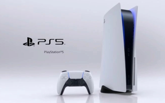
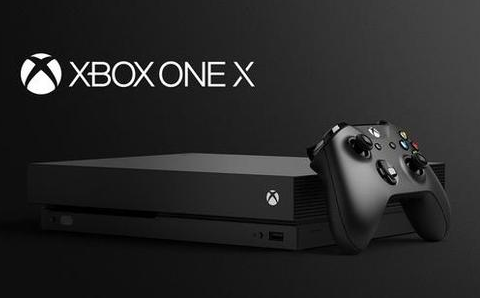
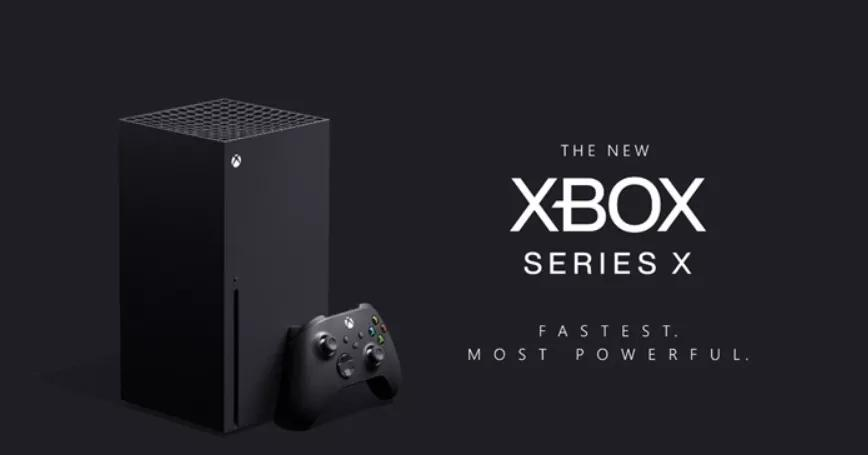

主机游戏，原名console game，又名电视游戏，包含掌机游戏和家用机游戏两部分。是一种用来娱乐的交互式多媒体。通常是指使用电视屏幕为显示器，在电视上执行家用主机的游戏。
为了要游玩指定的游戏，你需要准备该款游戏所属的游戏主机（又称为“平台”）。主流的游戏主机还包括了任天堂的“Switch”、微软的“Xbox One”、索尼的“PlayStation 4”。 任天堂原先代号“NX”的全新游戏机Nintendo Switch亮相，电视游戏主机与掌上游戏机“双机一体”。 主机游戏相对于电脑游戏的特性是高配置游戏体验和独占游戏，同一时期电脑升级配置的价钱远高于一台家用游戏机的价格。另外，任天堂等游戏开发商会出品一些游戏的独占游戏以推动游戏机的销售。

-

PlayStation 4
PlayStation 4是索尼电脑娱乐公司推出的家用游戏机。是PlayStation游戏机系列的第四代游戏主机，采用AMD Jaguar 8core处理器。2013年11月15日在北美地区开售 [1] ，同年11月29日在欧洲、中部美洲、大洋洲、南非开始销售。2014年2月22日在日本发售。2015年03月20日在中国大陆发售。
-

PlayStation 5
PlayStation 5（简称：PS5），指SONY推出的Playstation系列家用式游戏主机的第五代。 2020年11月12日，索尼新主机PS5在北美、日本、澳大利亚等地上市，11月19日登陆其它市场。 2021年2月8日，PlayStation中国宣布国行PS5将于2021年4月到6月期间上市。
-

Nintendo Switch
任天堂Switch（Nintendo Switch），简称NS，是任天堂公司于2017年3月发布的主机，采用家用机、掌机一体化设计。新机不锁区，支持1920*1080电视输出和1280*720掌上输出。港版2017年3月3日发售，台版12月1日发售，中国大陆版2019年12月4日由腾讯发售。
-

Xbox One
XBOX ONE，是微软发售的家用游戏机。是Xbox 360的下一代机种。简称为XONE、XB-ONE。于2013年11月22日在美国、欧洲等13个国家发售。2014年9月4日在日本发售。初代机型已停产，现有Xbox One S和Xbox One X两款机型。 “Project Scorpio”是一个改进版的、高性能Xbox One控制台，旨在为用户带来更华丽、更流畅的游戏体验。同时，“Project Scorpio”还将会支持更多视觉上的改进，例如原生4K和60帧每秒的性能，使得游戏看起来更加真实。
-

Xbox Series X
Xbox Series X是一款由微软研发并推出的家用电子游戏机。产品接替Xbox One，属于Xbox系列游戏机的第四代。其最初于2019年E3游戏展上以研发代号Project Scarlett公开，后于2019年The Game Awards颁奖典礼上公布正式名称，并计划于2020年11月10日发售。